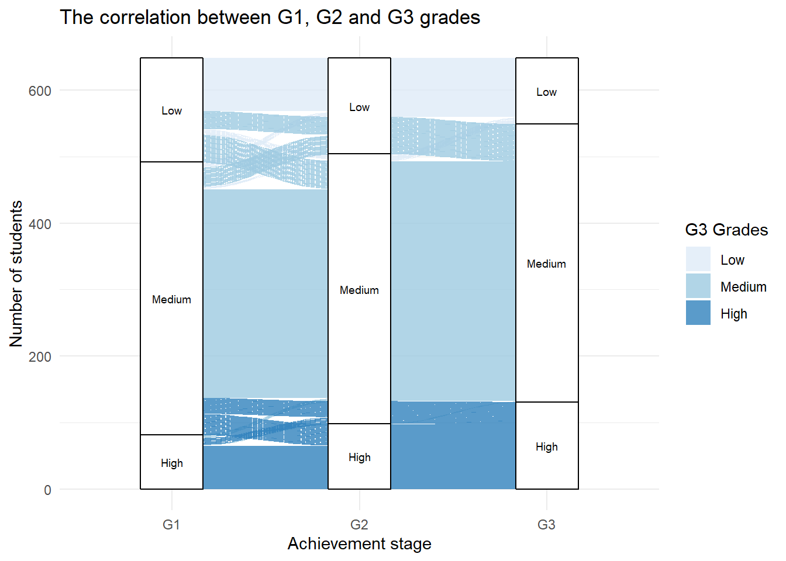
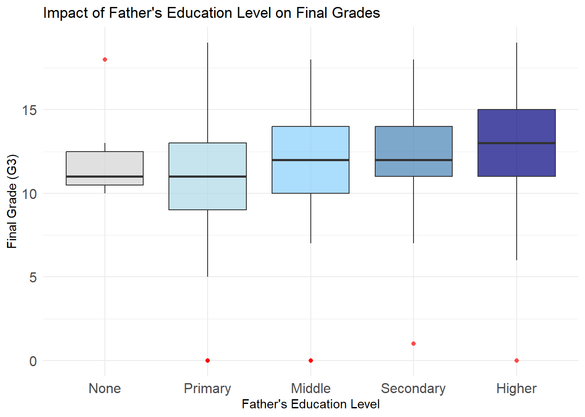
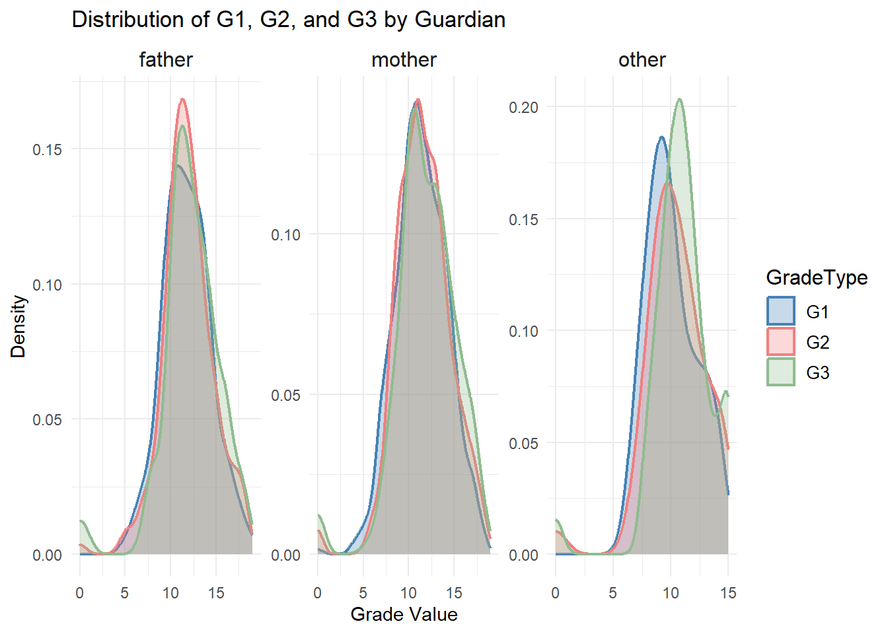
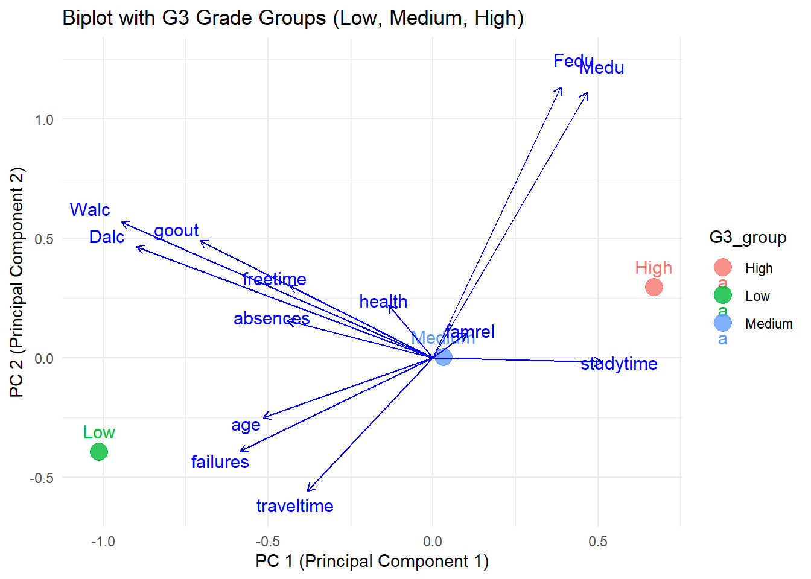

Code
library(readr)
data <- read_delim("student-por.csv", delim = ";", col_names = TRUE, show_col_types = FALSE)Understanding the progression of student performance across different stages is crucial for identifying trends and patterns. This section focuses on the three academic stages:
The grades in each stage are divided into three categories: - High (≥15): Reflecting excellent performance. - Medium (10-14): Representing average performance. - Low (<10): Indicating below-average performance.
The alluvial diagram below illustrates the correlation and flow between students’ grades across G1, G2, and G3 stages. Each stratum represents the number of students in each grade category, while the flows indicate transitions between these categories across the stages.
library(readr)
data <- read_delim("student-por.csv", delim = ";", col_names = TRUE, show_col_types = FALSE)library(dplyr)
载入程序包：'dplyr'The following objects are masked from 'package:stats':
filter, lagThe following objects are masked from 'package:base':
intersect, setdiff, setequal, unionlibrary(ggalluvial)载入需要的程序包：ggplot2data_grouped <- data %>%
dplyr::select(G1, G2, G3) %>%
mutate(
G1_group = factor(case_when(
G1 >= 15 ~ "High",
G1 >= 10 ~ "Medium",
TRUE ~ "Low"
), levels = c("Low", "Medium", "High")),
G2_group = factor(case_when(
G2 >= 15 ~ "High",
G2 >= 10 ~ "Medium",
TRUE ~ "Low"
), levels = c("Low", "Medium", "High")),
G3_group = factor(case_when(
G3 >= 15 ~ "High",
G3 >= 10 ~ "Medium",
TRUE ~ "Low"
), levels = c("Low", "Medium", "High"))
) %>%
dplyr::select(G1_group, G2_group, G3_group)
ggplot(data_grouped, aes(axis1 = G1_group, axis2 = G2_group, axis3 = G3_group)) +
geom_alluvium(aes(fill = G3_group), width = 0.2, alpha = 0.8) +
geom_stratum() +
geom_text(stat = "stratum", aes(label = after_stat(stratum)), size = 2.5) +
scale_x_discrete(limits = c("G1", "G2", "G3")) +
theme_minimal() +
scale_fill_brewer(type = 'seq') +
labs(
title = "The correlation between G1, G2 and G3 grades",
x = "Achievement stage",
y = "Number of students",
fill = "G3 Grades"
)Warning in to_lodes_form(data = data, axes = axis_ind, discern =
params$discern): Some strata appear at multiple axes.
Warning in to_lodes_form(data = data, axes = axis_ind, discern =
params$discern): Some strata appear at multiple axes.
Warning in to_lodes_form(data = data, axes = axis_ind, discern =
params$discern): Some strata appear at multiple axes.
The diagram reveals significant consistency in grade distribution, particularly among students in the “Medium” category, who maintain their performance across G1, G2, and G3. In contrast, students in the “High” and “Low” categories exhibit more mobility, with noticeable transitions to other groups, particularly between G1 and G3.
Mobility between grade categories suggests that academic performance can fluctuate significantly over time, potentially influenced by external factors such as motivation, teaching quality, or personal circumstances. By the final stage (G3), a majority of students consolidate in the “Medium” category, reflecting a natural tendency toward average performance.
The overall balance of grade distribution across stages remains stable, with no dramatic shifts in the total number of students in each category. However, the transitions highlight opportunities for targeted interventions:
Identify at-risk students moving to the “Low” category.
Support upward mobility for students transitioning from “Medium” to “High.”
Promote stability in the “High” category through personalized academic support.
While this visualization highlights the overall academic trends, it raises questions about the external factors influencing these patterns.
Family background, including parental education levels, family relationships, and guardianship, plays a crucial role in shaping students’ academic outcomes. In this section, we explore how these factors influence students’ final grades (G3).
The two boxplots depict the impact of Mother’s Education Level (first graph) and Father’s Education Level (second graph) on students’ final grades (G3). The results reveal some similarities and differences in how parental education correlates with academic performance.
library(ggplot2)
library(ggridges)
data_Medu <- data %>%
mutate(
Medu = factor(Medu, labels = c("None", "Primary", "Middle", "Secondary", "Higher"))
)
ggplot(data_Medu, aes(x = G3, y = Medu, fill = Medu)) +
geom_boxplot(alpha = 0.7, outlier.color = "red", outlier.shape = 16) +
scale_fill_manual(values = c("None" = "#D3D3D3", "Primary" = "#ADD8E6",
"Middle" = "#87CEFA", "Secondary" = "#4682B4", "Higher" = "#000080")) +
theme_minimal() +
coord_flip() +
theme(
legend.position = "none",
axis.text.y = element_text(size = 12),
axis.text.x = element_text(size = 12)
) +
labs(
title = "Impact of Mother's Education Level on Final Grades",
x = "Final Grade (G3)",
y = "Mother's Education Level"
)data_Fedu <- data %>%
mutate(
Fedu = factor(Fedu, labels = c("None", "Primary", "Middle", "Secondary", "Higher"))
)
ggplot(data_Fedu, aes(x = G3, y = Fedu, fill = Fedu)) +
geom_boxplot(alpha = 0.7, outlier.color = "red", outlier.shape = 16) +
scale_fill_manual(values = c("None" = "#D3D3D3", "Primary" = "#ADD8E6",
"Middle" = "#87CEFA", "Secondary" = "#4682B4", "Higher" = "#000080")) +
coord_flip() +
theme_minimal() +
theme(
legend.position = "none",
axis.text.y = element_text(size = 12),
axis.text.x = element_text(size = 12)
) +
labs(
title = "Impact of Father's Education Level on Final Grades",
x = "Final Grade (G3)",
y = "Father's Education Level"
)
Students with parents who have higher education levels (“Higher”) consistently achieve better grades, as seen in their higher medians and tighter interquartile ranges (IQR), indicating both stronger and more consistent academic outcomes. This trend is evident for both mothers and fathers, with mothers’ education levels having a slightly stronger impact, particularly in the “None” and “Primary” categories.
For parents with “Middle” or “Secondary” education levels, median grades are relatively stable, but variability increases, reflecting a wider range of performance. In contrast, students with parents in the “None” or “Primary” categories have the lowest median grades and the greatest variability, suggesting limited academic support.
Overall, as parental education levels increase, grades improve and become more consistent. This highlights the significant role of educated parents in fostering academic success and reducing performance disparities.
This ridgeline plot visualizes the distribution of students’ final grades (G3) across different levels of family relationship quality (famrel), ranging from “Very Poor” to “Very Good”. The plot highlights how family dynamics might correlate with academic performance.
data_famrel <- data %>%
mutate(
famrel = factor(famrel, labels = c("Very Poor", "Poor", "Average", "Good", "Very Good"))
)
ggplot(data_famrel, aes(x = G3, y = famrel, fill = famrel)) +
geom_density_ridges(alpha = 0.8, scale = 1.5) +
scale_fill_viridis_d(option = "D") +
theme_minimal() +
theme(
legend.position = "none",
axis.text.y = element_text(size = 10),
axis.text.x = element_text(size = 10)
) +
labs(
title = "Distribution of Final Grades by Family Relationship",
x = "Final Grade (G3)",
y = "Family Relationship",
fill = "Family Relationship"
)Picking joint bandwidth of 0.94
Family relationship quality has a clear influence on students’ academic performance. Students with “Very Good” relationships tend to cluster around higher grades, while those with “Very Poor” relationships exhibit flatter distributions, with a noticeable shift toward lower grades. As the quality of family relationships improves, grades become more concentrated at the upper end, indicating both better performance and consistency. However, students with “Average” relationships display a wider spread of grades, suggesting a mixture of influencing factors beyond family relationships alone.
library(ggplot2)
library(tidyr)
library(scales) # For a more aesthetic color palette
载入程序包：'scales'The following object is masked from 'package:readr':
col_factor# Convert the data to long format
data_long <- data %>%
pivot_longer(cols = c(G1, G2, G3), names_to = "GradeType", values_to = "GradeValue")
# Plot with modifications
ggplot(data_long, aes(x = GradeValue, fill = GradeType, color = GradeType)) +
#geom_histogram(aes(y = ..density..), position = "identity", alpha = 0.3, bins = 10) + # Use density
geom_density(alpha = 0.3, size = 0.8) + # Overlay density curves
facet_wrap(~ guardian, scales = "free") + # Facet by guardian
labs(
title = "Distribution of G1, G2, and G3 by Guardian",
x = "Grade Value",
y = "Density"
) +
scale_fill_manual(values = c("steelblue", "lightcoral", "darkseagreen")) + # Adjust fill colors
scale_color_manual(values = c("steelblue", "lightcoral", "darkseagreen")) + # Adjust line colors
theme_minimal() +
theme(
legend.title = element_text(size = 12),
legend.text = element_text(size = 10),
strip.text = element_text(size = 12) # Adjust facet labels size
)Warning: Using `size` aesthetic for lines was deprecated in ggplot2 3.4.0.
ℹ Please use `linewidth` instead.
The type of guardian influences students’ academic performance, particularly their final grades (G3). Students under “mother” or “father” guardianship tend to have tightly clustered grade distributions, with peaks in the middle-to-high range, reflecting consistent support. In contrast, students under “other” guardianship show broader distributions, indicating greater variability and potentially less stable academic guidance.
The density plot shows a steady progression of grades from G1 to G3 across all guardian types, with G3 consistently achieving the highest density. While students with “mother” or “father” guardians maintain concentrated peaks, those with “other” guardians experience more dispersed outcomes, suggesting potential challenges in academic consistency.
These trends underscore the role of guardianship in shaping academic success, with parents providing a more stable and supportive environment for students’ educational progress.
Family background, including parental education levels, family relationships, and guardianship, significantly influences students’ academic performance. Educated parents provide a stable and supportive learning environment, leading to higher and more consistent grades. Positive family relationships further enhance academic success, while poor dynamics increase variability in outcomes. Guardianship types also reflect differing levels of influence, with parents providing more stable academic support compared to other guardians. These findings highlight the importance of a strong familial support system in fostering academic achievement.
Academic performance is often influenced by various individual factors, including attendance, prior academic challenges, and personal well-being. This section explores two critical aspects: the relationship between absences and grades, particularly in the context of previous failures, and the impact of students’ health status on their final grades (G3). By analyzing these factors, we aim to uncover patterns that highlight the challenges faced by students and identify opportunities for targeted interventions to support academic success.
This scatterplot visualizes the relationship between absences and final grades (G3) across different levels of failures (0-3), with points colored by gender (red for females, blue for males). The facets represent the number of previous failures, revealing distinct patterns in how absences and gender correlate with academic performance.
library(ggplot2)
ggplot(data, aes(x = absences, y = G3, color = sex)) +
geom_point(alpha = 0.7, size = 2) +
facet_wrap(~ failures, labeller = labeller(failures = c(
"0" = "No Failures",
"1" = "1 Failure",
"2" = "2 Failures",
"3" = "3 Failures",
"4" = "4+ Failures"
))) +
theme_minimal() +
labs(
title = "Absences vs Final Grades by Failures and Gender",
x = "Absences",
y = "Final Grades (G3)",
color = "Gender"
)
Students without past failures display the widest range of grades, primarily clustering between 10 and 15. Absences have a limited effect on this group, as even those with more than 10 absences achieve diverse grade outcomes. This suggests that for students with no history of academic struggles, attendance is not the primary determinant of performance.
For students with one prior failure, grades become more concentrated between 5 and 12, with fewer high achievers compared to those with no failures. Absences play a more significant role in this group, as students with more than 10 absences exhibit a clear decline in performance.
When examining students with two prior failures, the majority of grades fall below 10, with very few achieving scores above this threshold. Absences further exacerbate this trend, with higher absences consistently associated with the lowest grade outcomes.
For students with three prior failures, grade distributions are the most restricted, with nearly all scores falling below 8. Absences amplify this already limited performance, as students with a history of repeated failures struggle to overcome the combined effects of absenteeism and prior academic challenges.
Absences and Academic Performance:
The detrimental impact of absences becomes progressively more severe with an increasing number of failures. Early academic struggles amplify the negative effects of poor attendance.
Intervention Priorities:
While reducing absences is beneficial across all categories, targeted interventions are essential for students with multiple failures, as they are disproportionately affected.
Equity Across Genders:
Gender does not significantly influence the relationship between absences and grades, reinforcing the need for universal strategies that address attendance and performance for all students.
This plot visualizes the distribution of final grades (G3) across different levels of health status (Very Poor to Very Good), with density curves representing gender (F for females in blue and M for males in red). The faceted layout allows for a comparison of grade distributions across health levels and between genders within each health category.
ggplot(data, aes(x = G3)) +
geom_histogram(aes(y = ..density..), binwidth = 1, fill = "skyblue", color = "black", alpha = 0.7) +
geom_density(aes(color = sex), size = 1) +
scale_color_manual(values = c("F" = "royalblue", "M" = "red"), name = "Gender") +
facet_wrap(~ health, labeller = labeller(health = c(
"1" = "Very Poor",
"2" = "Poor",
"3" = "Average",
"4" = "Good",
"5" = "Very Good"
))) +
theme_minimal() +
labs(
title = "Distribution of Final Grades (G3) by Health Status",
x = "Final Grades (G3)",
y = "Density",
subtitle = "Faceted by Health Status",
color = "Gender"
)Warning: The dot-dot notation (`..density..`) was deprecated in ggplot2 3.4.0.
ℹ Please use `after_stat(density)` instead.
Students with “Very Good” or “Good” health show the strongest concentration of grades in the upper ranges (15–20), with females consistently achieving slightly higher densities in the top grades compared to males. In contrast, students with “Very Poor” or “Poor” health have flatter distributions, with grades concentrated in the lower ranges (0–10) and a lack of high-performing students. Those with “Average” health status exhibit a more balanced distribution, with grades clustered around 10–15 for both genders.
Overall, health status strongly correlates with academic performance. Better health is associated with improved grades and consistency, while poorer health increases variability and limits achievement, particularly for students already facing academic challenges.
This section highlights two key individual factors affecting academic outcomes: absences and health status.
Absences: The compounding effect of absences and past failures underscores the importance of addressing absenteeism early, particularly for students with academic difficulties. Interventions should focus on reducing absences and providing targeted support to improve grades for at-risk students.
Health Status: The positive correlation between health and academic performance emphasizes the need for promoting better health habits and providing health-related resources in schools. This could include health awareness programs, mental health support, and wellness initiatives to ensure students maintain the physical and emotional well-being necessary for academic success.
Understanding the broader context of students’ academic performance requires analyzing their background and categorical variables. This section delves into how various types of support systems (family support, school support, and aspirations for higher education) affect G3 grade classification and explores the interdependencies among key categorical variables. Together, these analyses provide insights into the influence of background factors on academic outcomes.
This mosaic pairs plot provides a comprehensive overview of the relationships among categorical variables such as gender, support systems, extracurricular activities, and educational aspirations. By visualizing pairwise associations, the plot highlights patterns and potential dependencies between these factors, offering insights into how various support and demographic elements interact within the student population.
library(vcd)载入需要的程序包：grid# Subset your categorical columns
categorical_data <- data[, c(2, 16:23)]
# Ensure all categorical columns are factors
categorical_data[] <- lapply(categorical_data, as.factor)
# Create a contingency table
data_table <- table(categorical_data)
par(cex = 0.1, mar = c(5, 5, 5, 5)) # Adjust text scaling and margins
#par(cex = 0.8, mar = c(6, 6, 4, 2) + 0.1)
# Create a mosaic pairs plot
pairs(data_table, highlighting = 2,
main = "Mosaic Pairs Plot: Categorical Variables Relationships")
Gender Distribution and Support Systems:
Female students outnumber male students, as evident from the gender distribution.
School and family support (schoolsup and famsup) exhibit slight imbalances, with “no” responses being more common for family support, while school support has a greater proportion of “yes” responses.
Higher Education Aspirations:
A large proportion of students aspire to pursue higher education (higher = yes). This group shows strong overlap with students who have received school and family support, suggesting a possible link between support systems and long-term educational goals.
Extracurricular Activities:
Participation in extracurricular activities (activities = yes) is positively associated with both higher education aspirations and family support. Students involved in activities often have a broader support network, reinforcing the importance of engagement beyond academics.
Nursery Attendance and Aspirations:
Students who attended nursery school (nursery = yes) are more likely to aspire to higher education, indicating a potential long-term benefit of early educational exposure.
Other Variables and Patterns:
Internet access (internet = yes) and being in a romantic relationship (romantic = yes) are relatively evenly distributed across categories, showing no strong associations with support systems or higher education aspirations.
This plot underscores the interplay of support systems, aspirations, and other categorical factors in shaping students’ educational experiences. The strong connection between higher education aspirations and support—both familial and institutional—highlights the importance of fostering a supportive environment. Additionally, early education (e.g., nursery attendance) and extracurricular activities appear to have long-term positive influences on students’ goals and engagement. These insights can inform strategies to better support students in achieving their academic and personal objectives.
This mosaic pairs plot illustrates the relationships between categorical variables, including gender (sex), family support (famsup), school support (schoolsup), aspirations for higher education (higher), and others.
library(vcd)
library(dplyr)
library(forcats)
library(RColorBrewer)
# 分类 G3 成绩组
data$G3_group <- case_when(
data$G3 >= 15 ~ "High",
data$G3 >= 10 ~ "Medium",
TRUE ~ "Low"
)
data$G3_group <- as.factor(data$G3_group)
# 修改变量名称为更直观的标签
data <- data %>%
mutate(
higher = recode(higher, "yes" = "Aspires Higher Education", "no" = "No Aspiration"),
famsup = recode(famsup, "yes" = "Family Support", "no" = "No Family Support"),
schoolsup = recode(schoolsup, "yes" = "School Support", "no" = "No School Support")
)
# 调色板
palette <- brewer.pal(n = length(levels(data$G3_group)), name = "Set3")
# Mosaic Plot
vcd::mosaic(G3_group ~ famsup + higher + schoolsup,
data,
direction = c("v", "v", "v", "h"),
highlighting_fill = palette,
main = "Mosaic Plot of G3 Grade Group by Family Support and Higher Education"
)Students with aspirations for higher education consistently achieve better academic outcomes. A significant proportion of these students fall into the “High” and “Medium” G3 grade categories, while the “Low” category is markedly reduced compared to students without such aspirations. This underscores the motivational role of higher education goals in driving academic success.
The presence of family and school support also plays a critical role. School support is particularly effective in reducing the proportion of “Low” grades while boosting “Medium” and “High” outcomes, especially for students with aspirations for higher education. Family support, while slightly less impactful than school support in this context, still contributes positively to better grades.
When support systems are combined, the best outcomes are observed. Students with both family and school support, coupled with aspirations for higher education, show the highest proportion of “High” grades. Conversely, students without any support systems or aspirations are more likely to be concentrated in the “Low” grade category, highlighting the compounding disadvantage of lacking these key factors.
This visualization underscores the importance of aspirations and support systems—both familial and institutional—in shaping academic performance. It highlights the need for targeted interventions to ensure students without support or aspirations are not left behind.
This analysis highlights the significant role of background factors in shaping student performance. Aspirations for higher education strongly correlate with better academic outcomes, reducing “Low” grades and increasing “High” grades. Both family and school support systems contribute uniquely: family support helps improve “Medium” grades, while school support plays a critical role in mitigating “Low” grades.
The relationships among categorical variables, such as gender, extracurricular activities, and early education, emphasize the value of holistic support. Students with nursery school experience or active in extracurriculars are more likely to aspire to higher education, reinforcing the importance of early and sustained engagement.
In conclusion, fostering aspirations, strengthening family and school support, and encouraging early and extracurricular involvement can collectively create a foundation for academic success and equitable opportunities.
This section presents a comprehensive exploration of multivariate relationships and patterns within the dataset. The Parallel Coordinate Plot visualizes normalized values of various academic, behavioral, and contextual variables categorized by school choice reasons. The PCA Biplot illustrates the contributions of different variables in separating the final grade (G3) groups into Low, Medium, and High categories.
This Parallel Coordinate Plot provides a detailed view of academic and behavioral variables for students grouped by their school choice reasons: course, home, other, and reputation.
library(GGally)Registered S3 method overwritten by 'GGally':
method from
+.gg ggplot2library(dplyr)
library(readr)
# Summarize the data
summarized_data <- data %>%
group_by(reason) %>%
summarize(across(where(is.numeric), mean))
# Plot the parallel coordinate plot
ggparcoord(
data = summarized_data,
columns = 2:ncol(summarized_data),
groupColumn = 1,
scale = "globalminmax",
alphaLines = 0.5
) +
theme_minimal() +
theme(
axis.text.x = element_text(angle = 45, hjust = 1),
plot.margin = margin(10, 20, 10, 20)
) +
labs(
title = "Academic and Behavioral Variables by School Choice Reason",
x = "Variables",
y = "Normalized Values"
)
This parallel coordinate plot highlights group-level differences based on the reason for school choice. The reputation group consistently performs better academically (higher grades in G1, G2, G3) and has higher parental education levels (Medu, Fedu), suggesting a stronger academic focus and support system. In contrast, the other group tends to underperform in grades, indicating potential challenges or differing motivations. Behavioral variables like Dalc (weekday alcohol consumption) and Walc (weekend alcohol consumption) show little variation across groups, while the home group demonstrates slightly better health and lower absences, possibly due to proximity benefits. These patterns suggest a need for tailored support for underperforming groups like other.
Insights
This PCA Biplot maps students into Low, Medium, and High G3 grade groups while illustrating the influence of academic, behavioral, and contextual variables on grade differentiation.
# Load necessary libraries
library(ggplot2)
library(ggfortify)Warning: 程序包'ggfortify'是用R版本4.4.2 来建造的library(dplyr)
# Prepare data by removing G1, G2, and G3 and ensure only numeric variables are used
pca_data <- data[, !(names(data) %in% c("G1", "G2", "G3"))]
pca_data <- pca_data[sapply(pca_data, is.numeric)] # Keep only numeric columns
# Perform PCA
pca_result <- prcomp(pca_data, center = TRUE, scale. = TRUE)
# Add G3 group labels (Low, Medium, High)
data$G3_group <- factor(ifelse(data$G3 >= 15, "High",
ifelse(data$G3 >= 10, "Medium", "Low")))
# Prepare PCA results for plotting
pca_plot_data <- data.frame(pca_result$x, G3_group = data$G3_group)
# Aggregate to get one point for each group
aggregated_data <- pca_plot_data %>%
group_by(G3_group) %>%
summarize(PC1 = mean(PC1), PC2 = mean(PC2))
# Create the biplot
ggplot(aggregated_data, aes(x = PC1, y = PC2, color = G3_group)) +
geom_point(size = 5, alpha = 0.8) +
geom_text(aes(label = G3_group), vjust = -1, size = 4) +
geom_segment(data = as.data.frame(pca_result$rotation),
aes(x = 0, y = 0, xend = PC1 * 2, yend = PC2 * 2),
arrow = arrow(length = unit(0.2, "cm")), color = "blue") +
geom_text(data = as.data.frame(pca_result$rotation),
aes(x = PC1 * 2.2, y = PC2 * 2.2, label = rownames(pca_result$rotation)),
color = "blue", size = 4) +
labs(title = "Biplot with G3 Grade Groups (Low, Medium, High)",
x = "PC 1 (Principal Component 1)",
y = "PC 2 (Principal Component 2)") +
theme_minimal()
This PCA biplot effectively illustrates the relationships between variables and their influence on distinguishing G3 grade groups (Low, Medium, High). Key variables like studytime, Medu, and Fedu align with higher grades, while failures and age are associated with lower grades. The directions and proximities of arrows reveal correlations among variables, such as Walc and Dalc. The separation of G3 groups along PC1 highlights how these variables differentiate grade performance, making the plot a valuable tool for understanding underlying patterns.
Insights
The multivariate analysis underscores the importance of both contextual and behavioral variables in determining academic success. High-performing students benefit from supportive family environments, structured study routines, and positive health behaviors. In contrast, low-performing students are often associated with negative behaviors like alcohol consumption and higher failure rates.
These findings suggest targeted interventions focusing on improving behavioral habits and addressing absenteeism could significantly benefit medium- and low-performing students. Additionally, leveraging parental involvement and structured family support systems could further enhance overall academic outcomes.